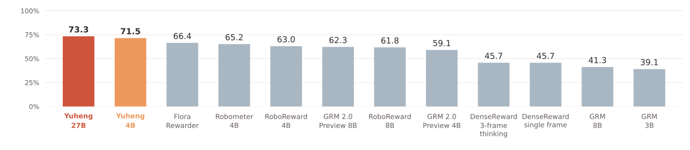
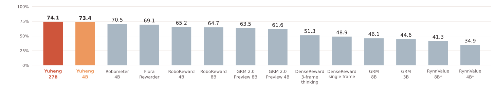
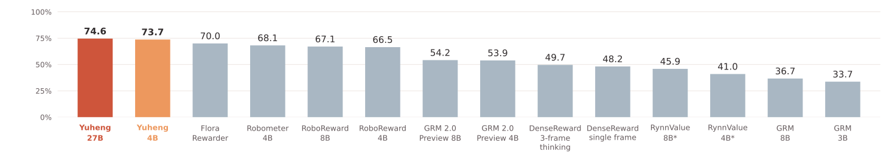
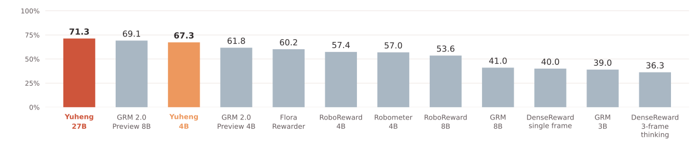

You define the scale.
Provide reference keyframes and assign their progress values. Yuheng measures progress relative to your milestones, making the definition of progress explicit and controllable.
In-context progress definitionOne demonstration. Your definition of progress.
A shared measure across trajectories and embodiments.
A robot can keep moving without moving closer to its goal. Understanding the difference is essential.
Progress models measure how far a robot has advanced toward completing a task. They can provide rewards for reinforcement learning, reveal failures, and help make better use of robot data. Yet existing models often misjudge progress and depend on task-specific fine-tuning to work in a new setting.
We introduce Yuheng, an in-context progress model that takes a few annotated keyframes from one successful trajectory as its reference. Those keyframes define what progress means—so the model can evaluate new trajectories against the same semantic scale. Yuheng works across grippers, dexterous hands, and human hands, and can use a reference from one embodiment to evaluate another performing the same task.
Yuheng · 玉衡
Named after Yuheng, one of the seven stars of the Big Dipper. Its name evokes balance and measurement, guiding how we measure robot progress.
Provide reference keyframes and assign their progress values. Yuheng measures progress relative to your milestones, making the definition of progress explicit and controllable.
In-context progress definitionAdapt to unseen tasks and objects with a single successful reference trajectory. Yuheng reasons about the relationship between reference keyframes and the frame being evaluated.
One-shot generalizationFrames that represent the same semantic stage receive aligned progress values—even across different trajectories. Compare execution states on a common, meaningful scale.
Semantic progress alignmentMeasure progress across grippers, dexterous hands, and human hands. A successful reference from one embodiment can guide progress evaluation of another embodiment performing the same task.
Multi-embodiment support & cross-embodiment transferA vision-language model reads the task instruction, reference keyframes,
and current frame together.
The progress head predicts where that frame belongs on your scale.
A language description of the task
Successful trajectorySelected keyframes + assigned progress
Any trajectory of the same task,
including a different embodiment
Reason across visual context

Aligned with the
reference scale
Select a semantic milestone, then change its assigned scale. The example shows the alignment Yuheng aims to learn.
Illustration only · no model inferenceYuheng is trained on processed and filtered Robometer data, with more precise annotations produced using GPT 6 astra and 6.1 sol. The same annotation approach also underpins our progress benchmark.
From choosing the progress scale to transferring it across tasks and effectors.
Assign progress values to keyframes from a successful trajectory. These annotations define the scale that Yuheng uses to evaluate other trajectories of the same task.
Different assignments can place different emphasis on the same semantic milestones. The model’s estimates follow the reference scale provided in context.
Same reference keyframes, different assigned scales
For each new task, provide its instruction and one successful reference trajectory. Yuheng uses that context to evaluate progress on unseen tasks and objects without task-specific fine-tuning.
It reasons about the relationship between the reference keyframes and the current frame, allowing the same model to work across different tasks.
One reference per task, multiple query trajectories
Frames at the same semantic stage receive similar progress values on the reference scale, even when trajectories differ in execution speed, motion, or outcome.
This alignment makes progress comparable across successful, suboptimal, and failed executions, and helps retrieve corresponding keyframes from different trajectories.
Corresponding task stages on a shared progress scale
Record one successful human-hand trajectory and label its keyframes with progress values. Use it as in-context reference to evaluate other trajectories of the same task executed by a dexterous robot hand.
The reference and query can come from different embodiments, while the task and its semantic progress scale stay shared.
Task instruction + keyframes + progress
Current frame → reference-aligned progress
A progress model should be judged throughout a task—not only at its endpoint. We introduce a more precisely annotated benchmark to evaluate progress across the full course of execution.
Designed to improve on the progress annotations used in Robometer and RoboReward, it provides a fairer basis for comparing what different progress models actually understand.
Choose a task and a trajectory. Compare their progress curves, then play or scrub through the highlighted trajectory frame by frame.
Progress ordering, task outcomes, and absolute accuracy—evaluated against GPT annotations on our out-of-distribution benchmark.
Each chart is sorted from highest to lowest. Average score is the arithmetic mean of within-trajectory Overall, cross-trajectory Overall, and terminal agreement. MAE is reported separately.
Scroll horizontally to see every model in each chart and all metrics in the table.
Equal-weight mean of the three overall agreement rates.

Overall pair agreement within individual trajectories.

Overall pair agreement across different trajectories.

Agreement with the annotated success, suboptimal, or failure outcome.

Ordered by Average score, from lowest to highest. Models without an Average score appear first, unranked.
Agreement and Average scores are percentages (↑); MAE is in percentage points (↓). Bold marks the best unrounded value in each column. Non-success includes suboptimal and failed trajectories.
| Model | Average score ↑ | Within-trajectory ↑ | Cross-trajectory ↑ | Terminal ↑ | MAE ↓ | |||||||
|---|---|---|---|---|---|---|---|---|---|---|---|---|
| Success | Non-success | Overall | S ↔ S | N ↔ N | S ↔ N | Overall | Agreement | Success | Non-success | Overall | ||
| RynnValue 4B* | — | 44.9 | 24.1 | 34.9 | 42.8 | 33.9 | 45.1 | 41.0 | — | — | — | — |
| RynnValue 8B* | — | 53.6 | 28.2 | 41.3 | 51.3 | 36.1 | 50.2 | 45.9 | — | — | — | — |
| GRM 3B | 39.1 | 39.7 | 49.9 | 44.6 | 30.0 | 42.2 | 29.4 | 33.7 | 39.0 | 33.3 | 21.5 | 27.6 |
| GRM 8B | 41.3 | 37.3 | 55.6 | 46.1 | 29.6 | 45.3 | 33.9 | 36.7 | 41.0 | 33.8 | 16.7 | 25.5 |
| DenseReward · single frame | 45.7 | 49.4 | 48.4 | 48.9 | 45.1 | 48.9 | 49.1 | 48.2 | 40.0 | 29.6 | 28.7 | 29.2 |
| DenseReward · 3-frame thinking | 45.7 | 51.3 | 51.2 | 51.3 | 45.4 | 49.4 | 51.9 | 49.7 | 36.3 | 27.1 | 29.7 | 28.4 |
| GRM 2.0 Preview 4B | 59.1 | 68.3 | 54.5 | 61.6 | 62.1 | 50.1 | 52.6 | 53.9 | 61.8 | 17.4 | 26.2 | 21.7 |
| RoboReward 8B | 61.8 | 73.1 | 55.8 | 64.7 | 72.9 | 61.0 | 68.6 | 67.1 | 53.6 | 14.8 | 22.3 | 18.4 |
| GRM 2.0 Preview 8B | 62.3 | 68.0 | 58.6 | 63.5 | 60.9 | 51.3 | 53.0 | 54.2 | 69.1 | 18.0 | 25.7 | 21.7 |
| RoboReward 4B | 63.0 | 74.1 | 55.8 | 65.2 | 74.8 | 60.2 | 67.0 | 66.5 | 57.4 | 15.6 | 26.1 | 20.7 |
| Robometer 4B | 65.2 | 79.7 | 60.6 | 70.5 | 77.0 | 59.8 | 69.8 | 68.1 | 57.0 | 17.8 | 24.1 | 20.9 |
| Flora Rewarder | 66.4 | 78.7 | 58.9 | 69.1 | 76.3 | 63.4 | 71.7 | 70.0 | 60.2 | 14.4 | 25.5 | 19.8 |
| Yuheng 4B Ours | 71.5 | 77.4 | 69.1 | 73.4 | 71.9 | 71.2 | 76.4 | 73.7 | 67.3 | 12.1 | 11.9 | 12.0 |
| Yuheng 27B Ours | 73.3 | 80.4 | 67.3 | 74.1 | 76.2 | 70.0 | 77.1 | 74.6 | 71.3 | 10.4 | 10.9 | 10.6 |
S = success; N = non-success (suboptimal + failure). The evaluation includes 259 successful and 243 non-successful trajectories, including ICL references. Overall pair scores are weighted by pair counts, not by averaging subgroup scores.
* RynnValue: pair comparisons use negative remaining seconds with a 0.1-second tie threshold; GPT labels use a 0.1-progress threshold. Terminal agreement, MAE, and Average score are not applicable. Missing values are never treated as zero.
Evaluation settings: Robometer uses 8 frames interpolated to 32; Flora Rewarder assumes 1 FPS. CSV downloads retain full numerical precision.
For fixed pairs of frames from one trajectory, we compare the model’s progress ordering (<, ≈, >) with the GPT labels. A difference of at most 0.1 is a tie. The score is the percentage of correctly matched relations.
The same relation test is applied to pairs of frames from different trajectories, checking whether progress is comparable across executions. Results cover S ↔ S, N ↔ N, and S ↔ N pairs.
The last-frame progress predicts failure [0, 0.33), suboptimal execution [0.33, 0.66), or success [0.66, 1]. The score is the percentage of trajectories whose predicted outcome matches the GPT annotation.
MAE = 100 × mean |model progress − GPT progress| over all frames, with equal weight per frame. It measures absolute calibration in percentage points; lower is better. No tie tolerance is applied.
From learning better policies to understanding the data they learn from.
Use Yuheng’s progress estimates as a reward signal for reinforcement fine-tuning, following a DSRL-based approach.
Weight offline learning with progress information in an AW-BC-based approach, helping policies learn from task advancement.
Mark semantic keyframes in one successful trajectory. Retrieve frames with the closest progress values in other trajectories to find corresponding task stages.
Use progress patterns to identify successful and failed trajectories, and flag executions with repeated setbacks for more informed data selection.
A signal for failure detection. Progress estimates can also help identify stalled or regressing execution, providing a useful signal for recognizing when a robot is no longer advancing toward its goal.
Paper, models, code, dataset, and benchmark will be released progressively and linked here as they become available.